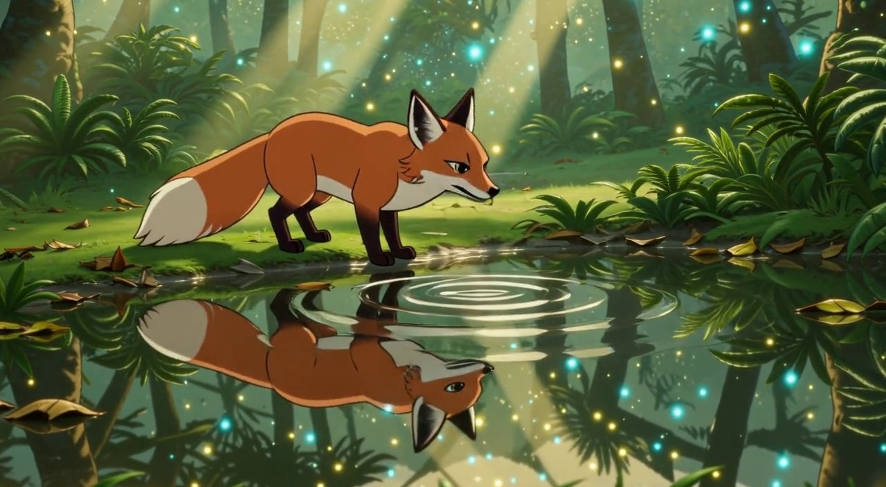
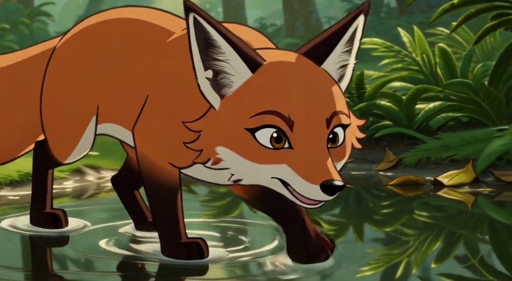
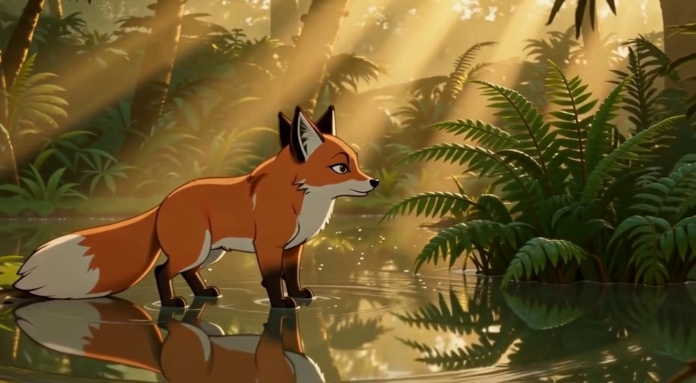
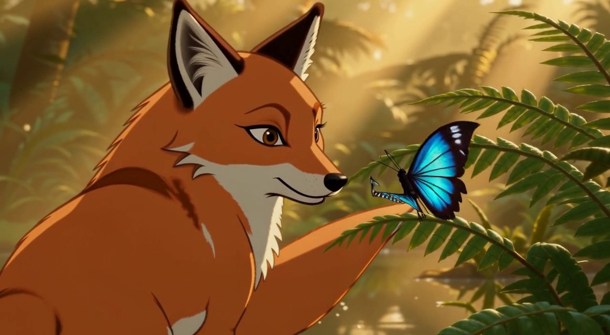
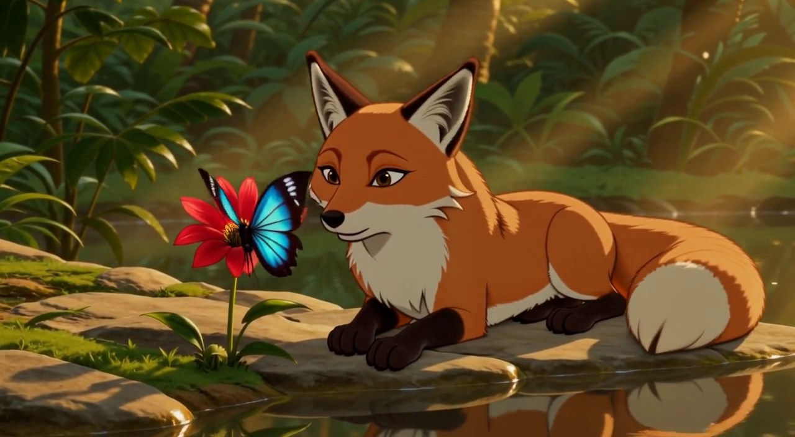

Phase 37A《雨林奇遇》— 9/9 + 修复轮（N4/N5/N6 重生成 + N6→N7 keyframes 桥）
播放序：N1→N2→N3→N4→N5→N6→【桥 s10_c06】→N7→N8→N9 ｜ 桥尾帧↔N7首帧 MAE 2.9（视觉钉死）
N1（s09_c01）· 晨雾小径 · 8s · 链根参考直生
[人工: minor]
预期尾帧：
狐狸在小径中段减速站定，四足着地，身体朝向画面右侧，耳朵竖起
实际末帧：

Vision 建议 minor
| expected_tail_match | CLOSE - fox is stopping but not yet at rest position; ears are up but body language suggests motion continuing |
| character_pose_state | Fox is standing still but not yet fully stationary - appears to be mid-deceleration rather than completely stopped |
| character_position | Fox positioned on the path in the middle ground, facing right as expected |
| camera_state | Static shot composition consistent with previous frame |
| action_endpoint | Fox is slowing down/stopping but not yet fully static - body still shows some forward momentum |
| next_shot_readiness | Ready for next shot to begin from this near-stationary position |
| identity_consistency | The fox is correctly depicted with orange fur, white-tipped tail, and characteristic fox features |
| environment_consistency | Forest path environment matches expected setting with dappled sunlight, ferns, and trees |
| unexpected_elements | None - all elements align with expected storyboard direction |
执行者备注：姿态中途减速未站定，N2 首句吸收。
N2（s09_c02）· 发现发光蘑菇·道具交互 · 10s · 接力 N1→N2
[人工: minor]
预期尾帧：
狐狸鼻尖仍贴近蘑菇帽，蘑菇亮起，光尘悬浮在两者之间
实际末帧：

Vision 建议 none MAE vs 上一镜: 54.7
| expected_tail_match | The final frame aligns with the expected tail description — fox's nose near the glowing mushroom with suspended light dust. |
| character_pose_state | Fox is standing alert, head turned toward the glowing mushroom, mouth slightly open. |
| character_position | Fox positioned on the left side of frame, facing right toward the mushroom. |
| camera_state | Medium shot, eye-level perspective, static framing. |
| action_endpoint | Scene ends with fox gazing at the illuminated mushroom, suggesting wonder or discovery. |
| next_shot_readiness | Frame ends cleanly on a moment of magical stillness, allowing for natural transition into next shot. |
| identity_consistency | Fox appears consistent with typical animated fox design: orange fur, white chest, large ears. |
| environment_consistency | Forest setting with glowing mushroom and floating light particles is maintained. |
| unexpected_elements | No unexpected deviations from the planned tail sequence. |
| prop_state | Mushroom is glowing with blue-green light; sparkling particles float in the air between fox and mushroom. |
| action_endpoint | Scene ends with fox gazing at the illuminated mushroom, suggesting wonder or discovery. |
执行者备注：蘑菇/光尘/驻足全中；鼻尖接触未落尾帧，N3 首句吸收。
N3（s09_c03）· 蹲坐打量·静态反应 · 5s · 接力 N2→N3
[人工: none]
预期尾帧：
狐狸坐姿稳定，面朝右侧蘑菇，头微歪
实际末帧：

Vision 建议 none MAE vs 上一镜: 45.5
| expected_tail_match | Fully matches expected tail: seated fox facing right at mushroom with slight head tilt |
| character_pose_state | Fox is in stable seated position facing right toward the mushroom, head slightly tilted upward in curiosity |
| character_position | Fox seated on forest floor to left of frame, oriented toward right-side glowing mushroom |
| camera_state | Medium shot at eye level with fox, shallow depth of field focusing on fox and mushroom |
| action_endpoint | Fox's pose represents a stable observational endpoint—no further motion indicated |
| next_shot_readiness | Strong continuity ready—stable composition allows smooth transition to next shot |
| identity_consistency | Fox correctly depicted as orange-red with white chest and black-tipped ears, matching expected character design |
| environment_consistency | Dense forest with hanging vines and glowing blue mushroom matches planned magical forest setting |
| unexpected_elements | Sparkling particles around mushroom and soft ambient glow not mentioned in expected tail but enhance visual appeal |
| prop_state | Glowing blue mushroom stationary on log, no movement or transformation detected |
执行者备注：坐姿/朝向/道具一致全中。
N4（s09_c04）· 萤火虫追逐·跃倒木·高运动 · 10s · 接力 N3→N4 修复轮
[人工: minor]
预期尾帧：
狐狸从倒木落地后减速站稳，背对镜头面向深处，萤火虫在前方盘旋
实际末帧：

Vision 建议 minor MAE vs 上一镜: 45.7
| expected_tail_match | Partially matches - fox is present and facing forest depth, but no visible landing/decoding motion, appearing already settled |
| character_pose_state | Fox is seated/crouched on ground near log, facing away from camera - appears stable but not in active landing pose |
| character_position | Positioned near the fallen log, back to camera, facing into the forest depth as specified |
| camera_state | Medium shot from behind fox, slightly elevated angle, static framing |
| action_endpoint | Scene shows post-action settle rather than active landing - fox appears already stationary |
| next_shot_readiness | Good continuity potential - fox positioned facing deep into forest, ready for forward movement |
| identity_consistency | Red fox with white-tipped tail, consistent throughout |
| environment_consistency | Forest setting with fallen log, lush greenery, and bioluminescent elements matches expected forest environment |
| unexpected_elements | Abundant glowing fireflies and light rays not explicitly mentioned in expected tail; lighting appears more ethereal than typical forest floor |
| camera_state | Medium shot from behind fox, slightly elevated angle, static framing |
执行者备注：【修复轮 r2】日光锚定后背对镜头+全身+白日全中；吸引子被『日光文本+日光接力参考』击败。
N5（s10_c01）· 空地水塘·环境变化 · 8s · 接力 N4→N5 跨段 修复轮
[人工: minor]
预期尾帧：
狐狸立在水塘边缘低头饮水，水面有倒影，身后是雨林
实际末帧：

Vision 建议 none MAE vs 上一镜: 49.9
| expected_tail_match | Matches the plan: fox standing at water edge with reflection visible and rainforest background. |
| character_pose_state | Fox is bent forward at the water's edge, head down as if drinking. |
| character_position | Positioned on the left side of the frame, standing at the water margin. |
| camera_state | Medium shot, level angle showing fox and reflection; no camera movement indicated. |
| action_endpoint | Action shows fox leaning in toward the water, appearing to drink or inspect it. |
| next_shot_readiness | Good endpoint; fox is stationary enough to transition to next shot from this pose. |
| identity_consistency | Red fox appears in both the shot and the reflection, matching the expected tail character. |
| environment_consistency | Rainforest environment is consistent with green foliage, trees, and glowing particles. |
| unexpected_elements | None unexpected; glowing fireflies are a stylistic addition not mentioned but not contradictory. |
执行者备注：【修复轮 r2】饮水端点命中+倒影完整+光点群无缝延续。
N6（s10_c02）· 惊跳+好奇挪近·状态转换 · 8s · 接力 N5→N6 修复轮
[人工: minor]
预期尾帧（校准后）：
狐狸压低身子在浅水中朝蕨丛挪近两步，目不转睛（校准后端点；惊跳在镜中段）
实际末帧：

Vision 建议 minor MAE vs 上一镜: 42.2
| expected_tail_match | Partial mismatch: setting matches but the fox is not standing upright looking upward toward the ferns |
| character_pose_state | Fox standing and leaning forward into the water, head low—not looking up at the opposite bank |
| character_position | Centered in frame, partially in shallow water, aligned with fern bank on right |
| camera_state | Medium-shot framing, stable angle, no motion blur or tilt artifacts |
| action_endpoint | Frame shows mid-step forward paw entering water; does not represent a clear endpoint |
| next_shot_readiness | Low readiness: pose direction and gaze do not cleanly support a cut toward an upward-looking watchful stance |
| identity_consistency | Red fox consistent with expected tail description |
| environment_consistency | Shallow water and green ferns on far bank present and coherent |
| unexpected_elements | Mouth slightly open; prominent reflection and leaf detritus in water—acceptable but not specified |
| camera_state | Medium-shot framing, stable angle, no motion blur or tilt artifacts |
执行者备注：【修复轮 r2·加戏】好奇挪近蕨丛=新端点；为 N7 铺垫动机。
N6→N7 桥（s10_c06）· 桥梁镜·起身后凝视蕨丛（接续过渡） · 10s · keyframes：首=N6尾/尾=N7首 修复轮 keyframes 双钉
[人工: none]
预期尾帧（校准后）：
狐狸四足站立在浅水中蕨丛边缘，侧面朝右紧盯蕨丛（=N7 实际首帧状态，视觉钉死）
实际末帧：

Vision 建议 major MAE vs 上一镜: 43.3 MAE 尾帧↔N7首帧: 2.9（视觉钉死）
| expected_tail_match | Mismatch: expected full-body side profile standing in shallow water near ferns; actual frame shows only face in close-up. |
| character_pose_state | Close-up portrait only; full body not visible, ears upright, gaze forward. |
| character_position | Centered face fill; position relative to water edge or fern丛 cannot be confirmed from this shot. |
| camera_state | Extreme close-up on fox's face; tight framing differs from planned wide shot. |
| action_endpoint | Fox appears alert and calm, but does not clearly show 'staring at fern丛'; expression is ambiguous. |
| next_shot_readiness | Limited readiness for transition due to lack of environmental context and body positioning. |
| identity_consistency | Fox correctly rendered as orange with white markings and dark-tipped ears. |
| environment_consistency | Forest setting with green ferns visible, consistent with expected tail. |
| unexpected_elements | No water, paws, or background depth visible; framing is too tight compared to expected tail. |
执行者备注：【桥梁镜·keyframes】用户方法实证：首帧槽=N6尾帧（接力）、尾帧槽=N7首帧（seed 钉死）——provider 插值过渡；尾帧与 N7 首帧 MAE 2.9（多参考版 43.6 被吸引子劫持已弃用）。时长 10s 平滑。
N7（s10_c03）· 蝴蝶落尾·复杂交互 · 10s · 接力（原片未动）
[人工: minor]
预期尾帧：
狐狸回头面向尾尖，蝴蝶停在尾尖毛上，姿态静止
实际末帧：

Vision 建议 none MAE vs 上一镜: 34.9
| expected_tail_match | Strong match. The fox’s head is turned toward its tail, and the butterfly is resting on a fern near the tail tip in a frozen pose. |
| character_pose_state | The fox is turned back toward its tail and the butterfly, with a calm, focused expression. Pose is stable and intentional. |
| character_position | The fox occupies the left to center of the frame, facing right toward the butterfly. The butterfly is positioned on a fern near the fox's tail, matching spatial intent. |
| camera_state | The camera is at a medium close-up, slightly low angle, holding steady on the interaction. No movement detected—stable endpoint framing. |
| action_endpoint | The action of the fox turning to look at the butterfly landing on its tail has been reached and holds. The moment feels complete. |
| next_shot_readiness | Readiness is high. The composition is resolved and clearly frames a static, emotionally coherent beat suitable for transition. |
| identity_consistency | The fox is correctly rendered as a red fox with typical markings; the butterfly is blue and dark-bodied, consistent with the character roles. |
| environment_consistency | The setting is a sunlit forest with ferns and soft backlighting, consistent with a natural outdoor scene. No environment breaks noted. |
| unexpected_elements | None unexpected. All elements align with the planned tail-focused moment. |
| action_endpoint | The action of the fox turning to look at the butterfly landing on its tail has been reached and holds. The moment feels complete. |
执行者备注：回头+蓝闪蝶+近景+定格全中；接触面滑至蕨叶。MAE 34.9。
N8（s10_c04）· 蝴蝶红花·静态收势 · 8s · 接力 N7→N8
[人工: none]
预期尾帧：
狐狸趴在石上，蝴蝶停在红花上，两者相对，画面安稳
实际末帧：

Vision 建议 none MAE vs 上一镜: 48.3
| expected_tail_match | The final frame matches the expected tail description perfectly: fox resting on the rock, butterfly on the red flower, both relative and still. |
| character_pose_state | The fox is in a resting, prone position on the rock, matching the expected calm state. |
| character_position | The fox is lying on the rock facing left, and the butterfly is perched on the flower to its left, consistent with a relative placement. |
| camera_state | The camera angle is stable and steady, capturing the tranquil scene without motion. |
| action_endpoint | The action has reached a peaceful endpoint: the fox is resting while the butterfly is still. |
| next_shot_readiness | The shot ends in a stable, calm state, ready for a potential cut to a new scene or action. |
| identity_consistency | Fox and butterfly match their established identities with no discrepancies. |
| environment_consistency | The environment is a stable, serene forest with rocks, greenery, and soft lighting. |
| unexpected_elements | None unexpected; the scene is exactly as described. |
执行者备注：近乎完美：蝴蝶落红花+趴石+同框。
N9（s10_c05）· 暮色安睡·远景收官 · 5s · 接力 N8→N9
[人工: minor]
预期尾帧：
大远景：狐狸安睡石上，塘面映暮色，林间萤光点点
实际末帧：

Vision 建议 minor MAE vs 上一镜: 50.4
| expected_tail_match | Strong match: fox sleeping on rock, pond reflecting twilight, glowing particles in forest — all core elements present |
| character_pose_state | Fox curled asleep on rock beside water; eyes closed, relaxed posture — consistent with '安睡' |
| character_position | Centered on small rock island in middle of pond; framed by foreground foliage and background trees — suitable for wide shot |
| camera_state | Wide establishing shot composition with deep focus from foreground leaves to background canopy; stable and appropriate |
| action_endpoint | Static sleeping pose provides clear narrative endpoint; no motion suggests ongoing action |
| next_shot_readiness | Scene is settled and static; ready for transition to next shot without continuity disruption |
| identity_consistency | Fox character matches expected '狐狸安睡' (sleeping fox) identity; no visual contradiction |
| environment_consistency | Forest pond at dusk with firefly-like lights in trees and water; matches '林间萤光点点' and '塘面映暮色' |
| unexpected_elements | Colorful butterfly near fox’s nose is not mentioned in expected tail; adds minor whimsical detail |
| narrative_state | Peaceful conclusion of day; fox at rest in natural habitat — sets up calm or dream sequence |
执行者备注：安睡/暮色/萤光全中；蝴蝶被链继承（守候收尾）。